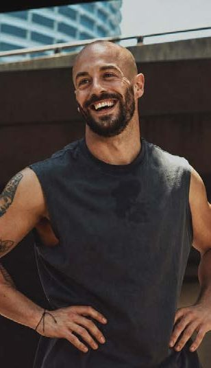

About us
Built on what Oslo is missing
Iron Standard exists because training seriously in this city has meant compromising on either the equipment or the environment.
01The founder
Built by someone who trains
Iron Standard is founded and operated by people who understand strength training, coaching and the Oslo market. The facility is a response to a specific frustration: training seriously in Oslo has meant choosing between equipment and environment, and accepting a room designed around membership numbers instead of the work.
That experience shapes every decision here, from how much floor a platform gets to why a cap on numbers is treated as quality control.
The full founder narrative is being written by the founder and will replace this section before launch.

02Background
What sits behind it
Credibility is demonstrated through specific knowledge, not claimed through adjectives.
Training
A background in serious strength training, which is where the standards for platforms, plates and loading come from.
Coaching
Working with lifters on technique, programming and long-term progression, which shapes how the floor is laid out.
The Oslo market
Experience inside the local fitness market, which is how the gap this facility fills was identified.
Advisory support
An advisory role supporting the founder through the build and the launch.
Anthony McCoy's credentials, dates and Thomas Lilley's advisory role are supplied by the founder and appear here once approved.
We set the standard.
03The market
The gap in Oslo
Large commercial gyms are built around broad appeal and price. Smaller specialist gyms often have credible equipment but not the presentation, space or support to match it.
Iron Standard sits deliberately between the two: specialist enough for athletes who compete, considered enough for anyone who trains with intent. The room sets the standard, and everyone who trains here meets the same one.
That position describes the environment itself, not a claim about scale, which is why it holds from the first day the doors open.
04Next
See where it happens.
The facility is where the position becomes concrete: the floor, the platforms and the equipment behind it.